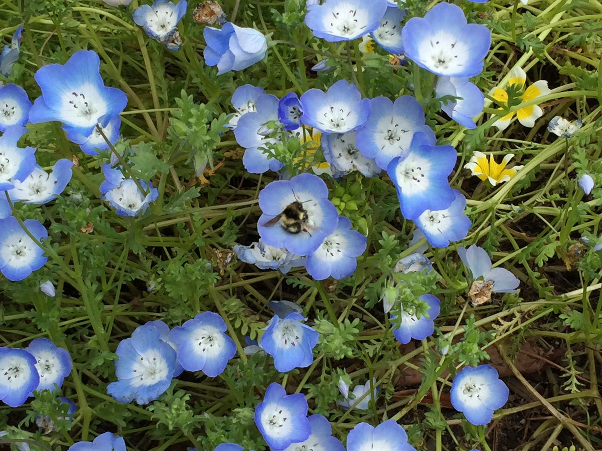
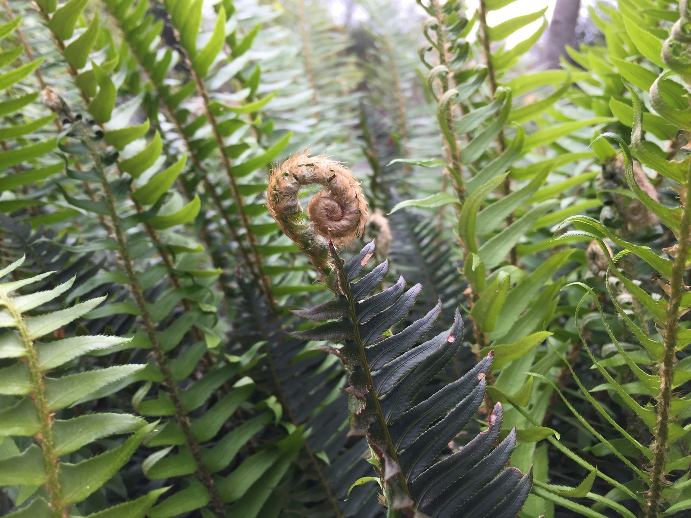
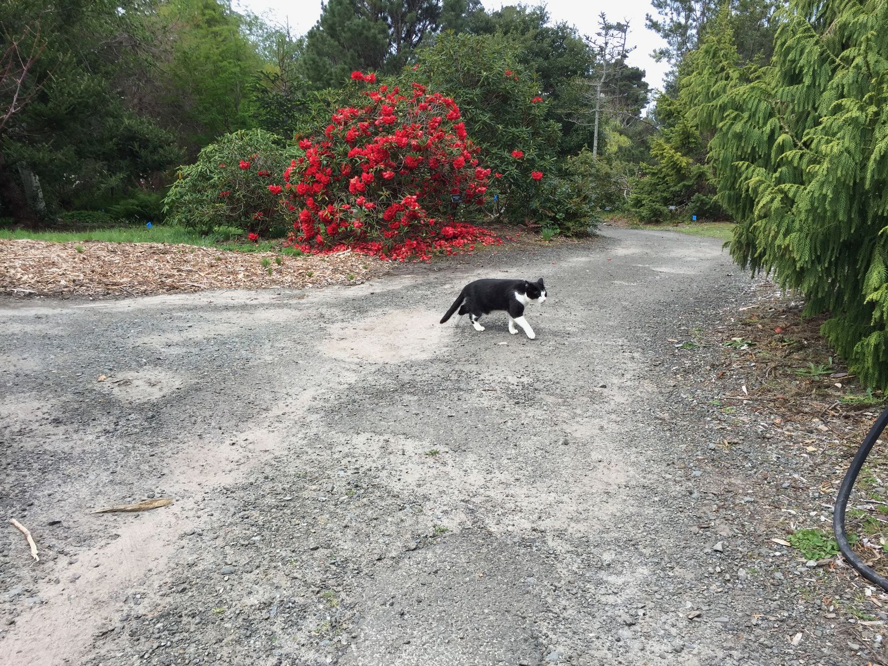
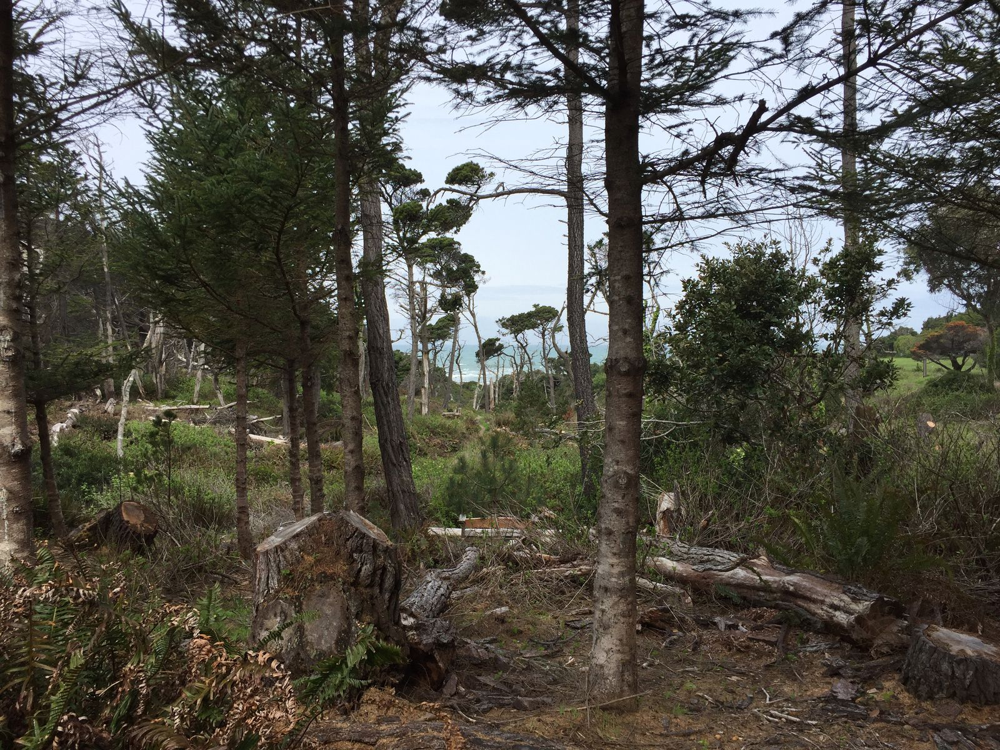
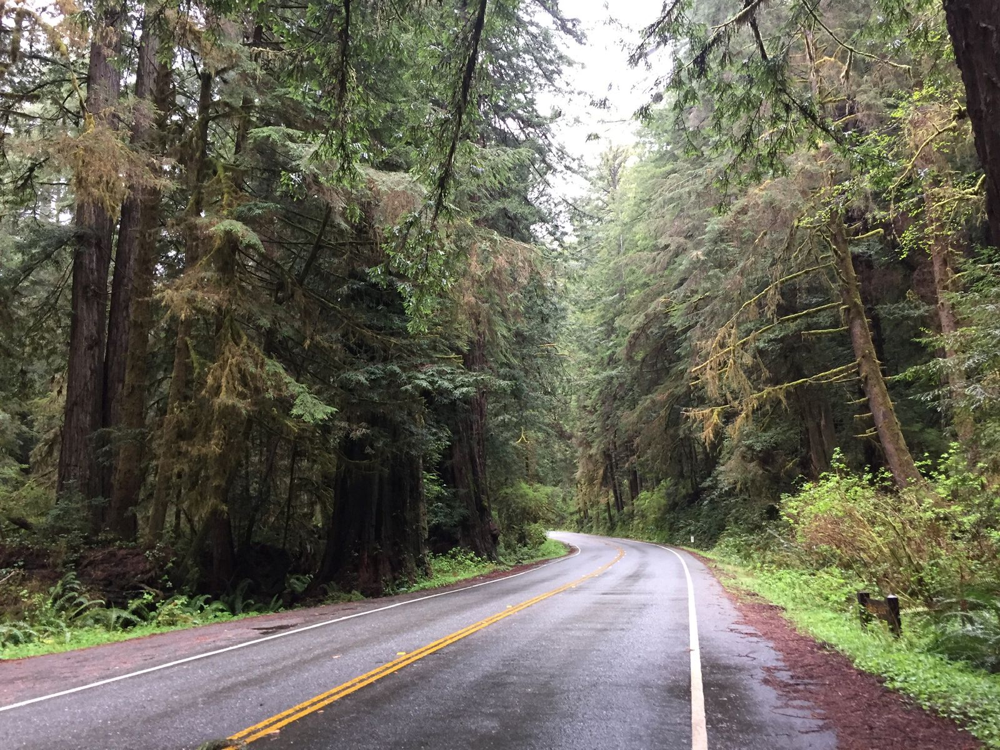

It's Cold Again
I crossed into Northern California last night and realized that it is cold here. So far, it's been cloudy or rainy in the mid-fifties. OK, so perhaps cold is a relative term here. I was getting used to nonstop sun in the mid-seventies.
Tonight I will be rather brief. I am writing now standing in the bathroom at a Holiday Inn Express at an Indian Casino in Klamath. There is no cell service and the wifi is extremely spotty. It's 7:45pm and I'm glad I ate in Eureka because there's nothing here open after 8.

My day started out at the Mendocino Coast Botanical Gardens. Beyond the typical cultivations of a botanical garden, they also had several acres of "natural" area where I could wander along trails to the ocean. As a group of about two dozen small children showed up just before I did, I beelined for the furthest edge of the gardens as soon as I got in. I didn't see them again for the rest of my time at the garden.



Before leaving town, I stopped by Cowlick's Hand Made Ice Cream in Fort Bragg city center. Of course, as soon as I entered the doors, there were those twenty five kids all eating ice cream and taking up every seat in the place. By the time I received my ice cream, though, half of them had left. I am doing a good job keeping up with my one-per-day ice cream goal. I'm just one ice cream behind.
The road to Eureka consisted of a 20 mile portion of 1 that was a winding road from the coast to 101 at Leggett more inland. It took about an hour to get through and felt like the most remote part of the trip so far. It's amazing how big the trees are.
After driving the several hours to Eureka, I stopped at Dick Taylor Craft Chocolate, as recommended by a co-worker. I spent more money there than I care to share here. Definitely stop here if you have the chance. Nothing else in Eureka looked interesting, so I kept going.
Finally making it to Klamath just after 6, I checked into my hotel room in this very unusual place. The hotel room itself looks pretty normal, but it is eerily quiet here. Only about 700 people live in Klamath, and this area only has two restaurants and one gas station. I should be ready to leave pretty early tomorrow because there is nothing to do otherwise.
There are two hikes that I am aiming to do in Redwood National Park...actually, in the interest of not backtracking too much in the car, the hikes are in Prairie Creek Redwoods State Park. I drove by the trailhead earlier today. It's basically just off the side of the road where there's enough room for a few cars to park. I don't expect that it will be too crowded.

By 2pm, I plan to be on the road north to Grants Pass, Oregon, where I will be meeting my uncle's brother for dinner.